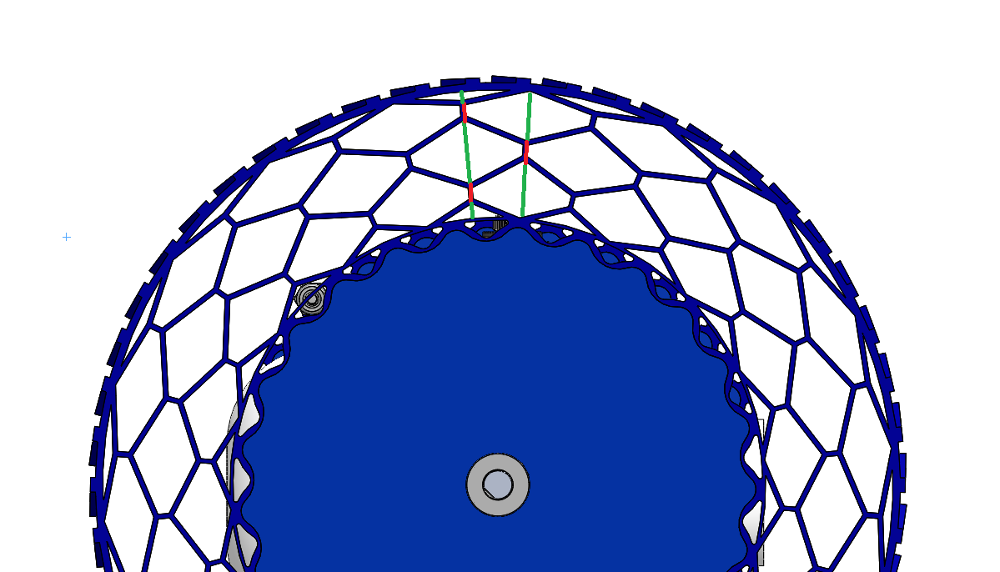
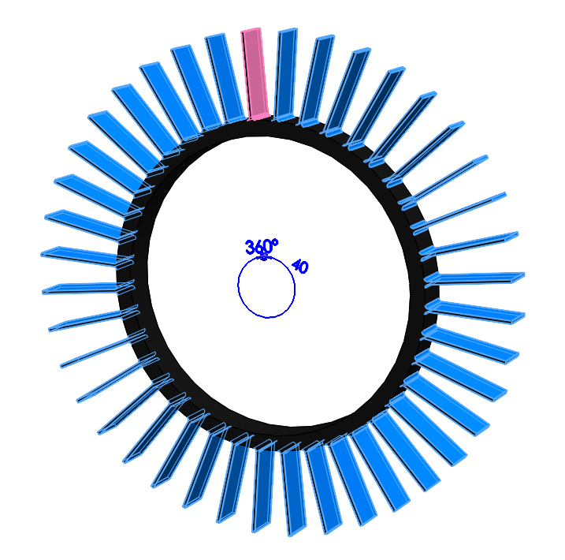

At the beginning of the Spring 2020 semester, I was tasked with redesigning the UGV wheels for Cornell University Unmanned Aerial Systems (CUAir). The Unmanned Ground Vehicle (UGV) is dropped from the aircraft at altitude and guided to the ground with a parafoil. In order to prevent tangling the parafoil in the wheels, the parafoil separates prior to touchdown. Parafoil separation occurs within 10 ft of the ground, so the UGV must survive a short free fall. For this purpose, the UGV was designed with shock-absorbing wheels made of 3D-printed, flexible plastic.
The old UGV wheel (pictured below) had two main areas to improve upon. First, the hexagonal spaces in the wheel compressed primarily via buckling. We wanted to gain better control over the compression using a more predictable mode. Second, the design of the wheel made it such that it could not compress fully; the green lines on the figure indicate areas that can be compressed, and the red lines indicate areas that remain uncompressed. For these two reasons, the wheel did not efficiently absorb all of the energy it could from free fall. The practical result of this was that the UGV could not survive the fall; wood cracking was heard upon impact.

The old UGV wheel with incompressible portions in red and compressible portions in green.
The new UGV wheel was designed with these problems in mind. The wheel was designed with a bike wheel in mind, with spokes radiating from the hub. These spokes can compress fully, thus utilizing the entire space between the wheel hub and the rim. The spokes were designed in Solidworks using a circular pattern, so the number of spokes - and the effective spring constant of the wheel - can be adjusted very easily.

The pattern used to create the UGV wheel spokes.
The wheel was 3D printed using TPU filament. I tested the wheel along with my teammates by dropping the unmanned ground vehicle with the new wheels several times from an accurate drop height and observing the results. After four tests and some adjustments to the hub interface, we found that the new wheels are fully effective in absorbing the impact energy. One of the aforementioned tests is shown here in slow motion. After adding the CUAir logo to the wheel rim, my work was finished.